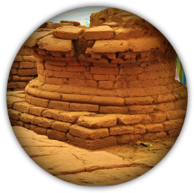

The first name on the list of the most exquisite.
historic places in Kerala has to be Edakkal caves! These naturally occurring alcoves have been attracting tourists since 1890 when they were first discovered. The prehistoric rock and wall carvings, and mesmerising views of the surrounding hills, sounds like a perfect getaway. to know more click here
Brace yourself for a unique historical and divine experience at the historic Thrikkakudi Rock-cut temple. The temple houses a three-feet long Shivalinga. Many devotees from different parts of the country come here to offer prayings. The age-old structure combined with exceptional ancient engineering has made this site one of the top 10 historic monuments in Kerala.
to know more click here

Take a step into the
to know more click here
royalty of the bygone days by visiting Poonjar Palace, one of the historical buildings in Kerala. We are not kidding when we say that this alluring palace, constructed from wood, is a testament to Kerala’s traditional architecture.
to know more click here

Ambaran ,also locally known as Pambaran , is a village of Akhnoor tehsil in Jammu district and is said to have been founded by Amba Jagdev Pawar . A scion of Pawar dynasty of Dhar Ujjain which seems to have been the original capital of Akhnoor. It was named Ambari after the family diety Amba, one of the names of goddess Durga. The name got changed gradually into Ambaran. Ambaran is the eighth place in the world, where relics of Buddha have been found in a stupa. to know more click here